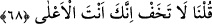
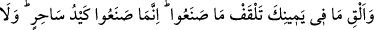
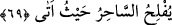

havâtırındandır.
Hakîkatte ise Allah Teâlâ sihre kahır elbisesi giydirmiş ve Mûsâ (a.s.) başka şeyden
değil, Allâh’ın kahrından korkmuştur. Çünkü, fâsıklar toplumundan başka kimse
Allâh’ın mekrinden emîn olamaz.
Fakir (Bursevî) der ki:
Hak dileyince her yaprak diken olur
İnce iplik gözde aynen yılan olur
Elemden yaprak titrer, suda akar
Nasıl korkmayayım Hakk’ın kahrından
68. Dedik ki: “Korkma! Üstün gelecek olan kesinlikle sensin.
Biz ona: “Dedik ki:” Vehmettiğin şeyden “Korkma!” Çünkü “üstün gelecek olan
kesinlikle sensin.” Onlara gâlib olacak ve baskın gelecek sensin. Biz her hâlükârda
seninle beraberiz. Çünkü sen, Müsebbib ile kâimsin, onlar ise sebeplerle kâim ve
onlara güvenmektedir. Yine en büyük âyetlerimiz/mûcizelerimiz seninle berâberdir. Bu
da, seni hıfz elbisesine büründürmemizdir.
et-Te’vîlâtü’n-Necmiyye’de der ki: “Âyet işâret etmektedir ki beşerî korku,
peygamber bile olsa insan yaratılışında yerleştirilmiştir. Bu korku, “Dedik ki:
“Korkma! Üstün olan kesinlikle sensin.” âyetinde olduğu gibi samedânî bir sözle,
rabbânî bir söküp çıkarmayla Allah tarafından ondan sökülüp çıkarılana kadar devam
eder. “Üstün olan kesinlikle sensin.” Yani sen, Yaratan’ı bırakıp yaratılanlardan
korkmaktan derece bakımından yükseksin, üstünsün. Burada işâret olunan bir diğer
mânâ da şudur: Mûsâ (a.s.)’ın korkusu yaratılmışlardan ve eşyâdan değil, bunları
meydana getirendendi. Çünkü o, asâsının büyük bir yılan olup da sihirbazların yaptığı
sihirleri yuttuğunu görünce, onun Cenâb-ı Hakk’ın kahhâriyet sıfatının mazharı olduğunu
anlamıştı. İşte Hz. Mûsâ, asâdan ve onun büyük bir yılan olmasından değil, Cenâb-ı
Hak’tan ve kahrından korktu. Bu sebeple Allah Teâlâ: “Korkma! Üstün olan kesinlikle
sensin.” buyurdu. Yâni, sen bizim katımızda bu asâdan daha üstün bir dereceye
sahipsin. Çünkü sihirbazların yaptıklarını yutan asâ, senin için yaratılmıştır. Yine sen
benim rasûlüm ve kelîmimsin. “Ben seni kendim için seçtim.” (Tâhâ 20/41) Eğer asâ
kahr sıfatımın mazharı ise sen kahr ve lütuf sıfatlarımın tamamının mazharısın.